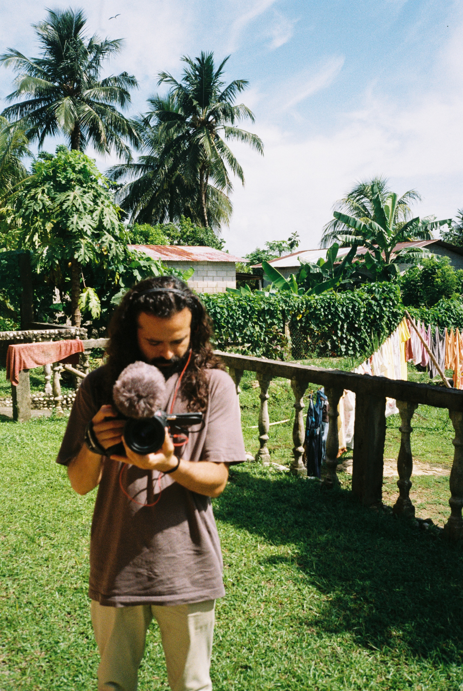
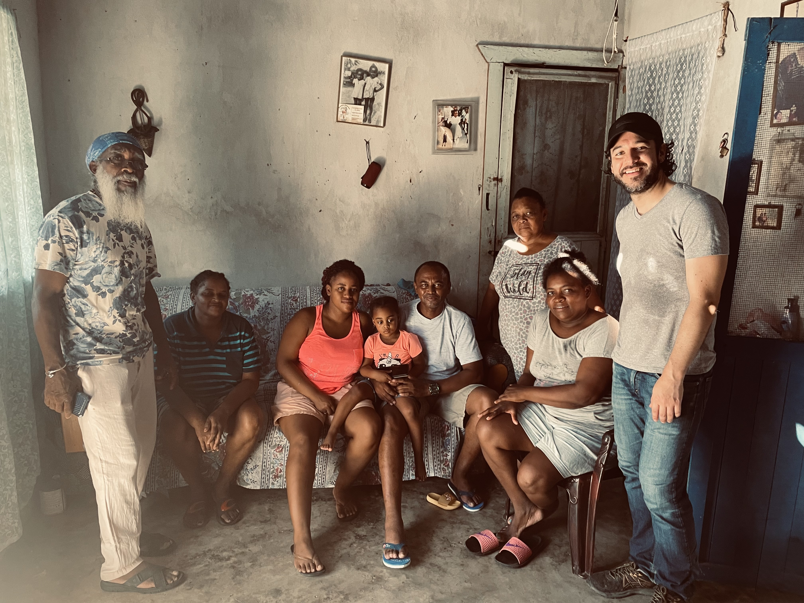
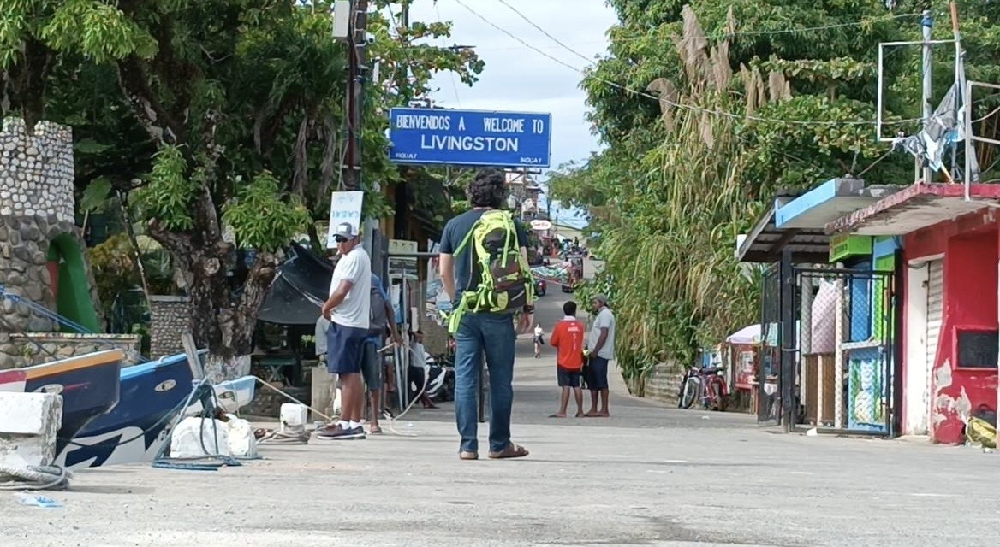

Algunas historias se transforman cuando son contadas. Otras ya estaban allí, esperando escucha.
“Qué hace una persona sensible en un mundo que no sabe escuchar.”



Fragmentos del proceso, no exhaustivos.
Este trabajo se aproxima sin prisa. No busca traducir de inmediato, sino sostener el tiempo necesario para que la experiencia pueda desplegarse en su propio lenguaje.
Pablo Rojas y Ronald Escobar
Ronald Escobar y Pablo Rojas
En desarrollo